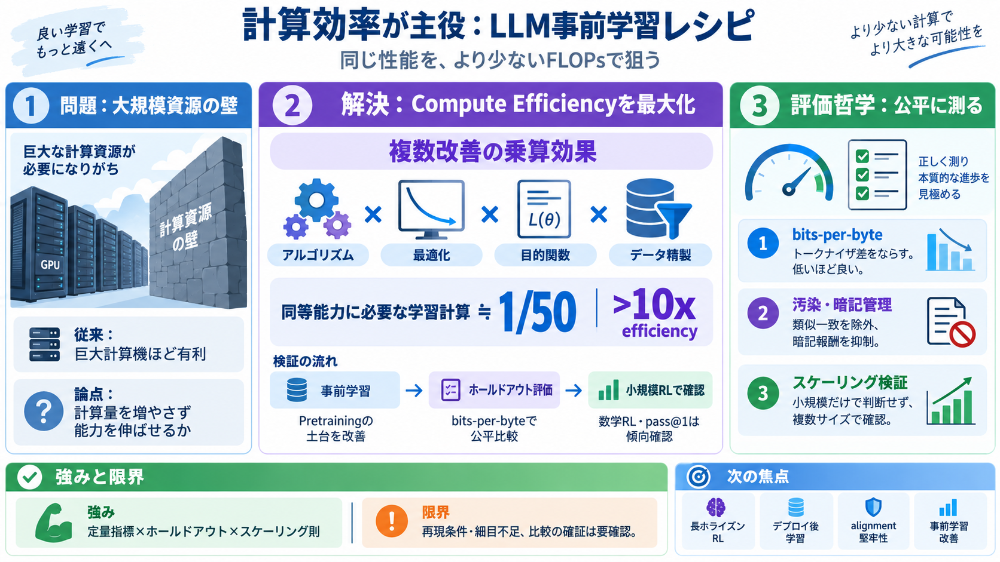

Magic Matched DeepSeek V4 Pro Base Quality for $500K, Using 50 Times Less Compute
On September 8, 2026, Magic — a 43-person AI startup targeting autonomous coding and AI research automation — published …

「強いベースモデル」を作る鍵として、学習計算の効率（compute efficiency）を最大化し、主張する“>10倍”の改善と評価哲学を整理します。
従来は「巨大モデル＝大規模計算機（例：100kチップ級）が勝つ」と見なされがちです。では、その“計算量を増やす以外”で能力を引き上げられるのかが論点になります。
ポイントは単一の魔法ではなく、最適化・目的関数・データ精製など複数改善の“乗算的効果”で、同等能力に必要なFLOPsを大きく減らす戦略です（>10x主張）。
“強いモデル”の土台として事前学習を最大化し、後工程（SFTやRLなど）に進む前に損失・汎化の土台を整えます。そこで効率改善が効く前提を置きます。
Magicチームは、DeepSeek V4 Pro Baseに対し“同等の性能”を、約50分の1のFLOPsで達成したと報告します。さらに追加計算（約$4M規模）でもオープンベースをperplexityで上回ったと述べます。
ベースモデルはプロンプト形式に敏感で、サンプリング評価がブレやすい可能性があります。そこでトークナイザ差をならした指標としてbits-per-byte（低いほど良い）を採用するとしています。
オープンモデル側は同じ“汚染除去”ができず不公平が残り得ます。そこでOCR/パーサ差・一致窓の閾値・類似度で除外し、知識評価では“暗記報酬”を抑える工夫も入れます。
一般化はホールドアウトデータで測り、推論・数学ではCoT生成や正解フィルタリングも実施すると述べています。加えて知識評価は分野別バケットに分解して見ます。
NanoGPT的な小規模で出た改善が大規模にそのまま効かないことがある、という前提があります。そこで各変更を“計算量が2桁程度異なる3つのモデル”で検証し、パワー則のフィットで利益を見極めます。
事前学習の損失が、その後のRL性能にどう繋がるかを確かめるため、短い数学RL（16k CoT予算）を行いpass@1等を示したとあります。これは“決定的証明”ではなく傾向確認として読むのが妥当です。
良い点は、計算効率をbits-per-byteで定量化し、ホールドアウト作成の工夫や、一般化と知識の測り分けを設計していることです。弱い点は、第三者が同条件追試できるだけの“細目”が十分に見えず、比較の確証が読み手に委ねられる点です。
次は長いホライゾンRL、長文コンテキストを使った“デプロイ後の学習エージェント”、整合（alignment）の理論的堅牢性、そして事前学習レシピの追加改善が挙げられています。公開の詳細と再現条件で、主張の確からしさを再チェックするのが鍵です。
On September 8, 2026, Magic — a 43-person AI startup targeting autonomous coding and AI research automation — published …
We match DeepSeek V4 Pro Base using ~50x fewer FLOPs – that’s around half of GPT3’s pretraining compute, or ~$0.5M on GB…
DeepSeek V4 Pro is a 1.6-trillion parameter Mixture-of-Experts (MoE) model from DeepSeek, released on April 24, 2026 und…
V3.2 had 685 billion parameters; V4-Pro reaches 1.6 trillion – more than double. The new model can process up to one mil…
DeepSeek V4 is the highly anticipated new series of open-weight large language models from Chinese AI lab DeepSeek. Rele…